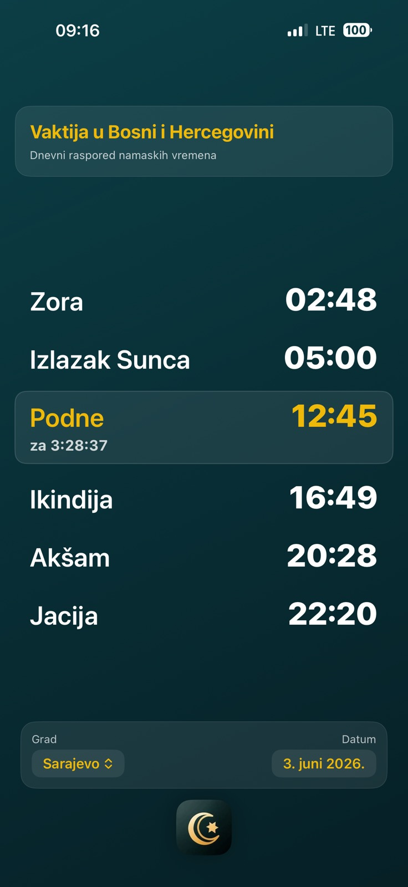
Bosnian home screen
The Bosnian interface shows the selected city, date, current time, and the full daily vakt schedule.
Screenshots
A closer look at the prayer time screens, iPhone widgets, Apple Watch views, notification settings, and app information pages.
Prayer Times

The Bosnian interface shows the selected city, date, current time, and the full daily vakt schedule.
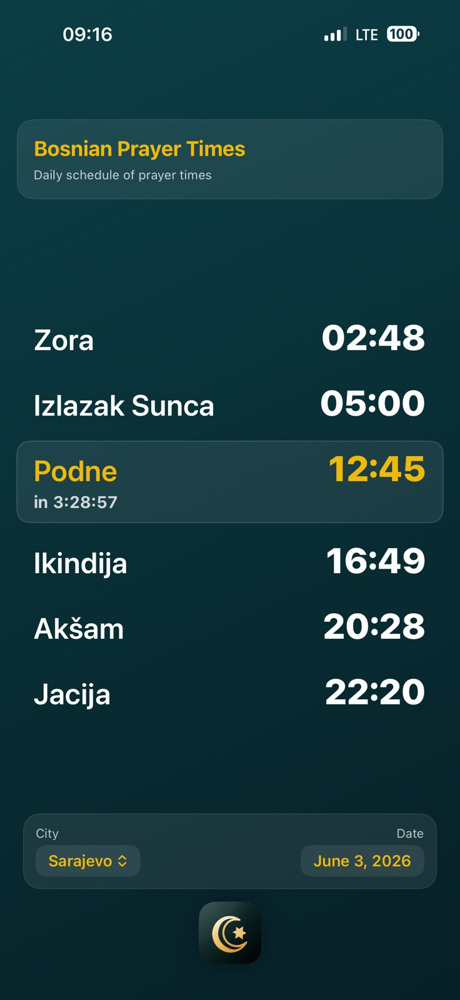
The English interface can keep Bosnian prayer names visible for users who prefer local terminology.
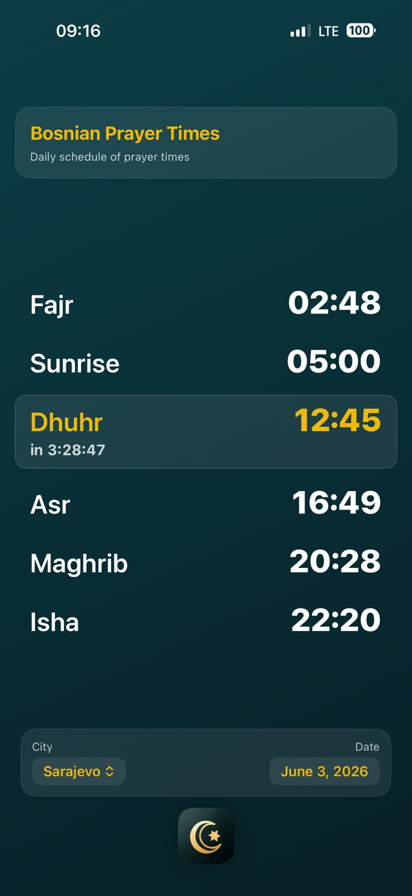
Prayer names can also be shown in English, including Fajr, Dhuhr, Asr, Maghrib, and Isha.
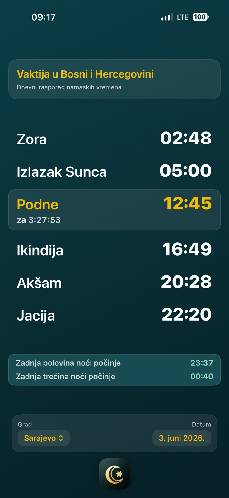
Optional night information can show when the last half and last third of the night begin in Bosnian.
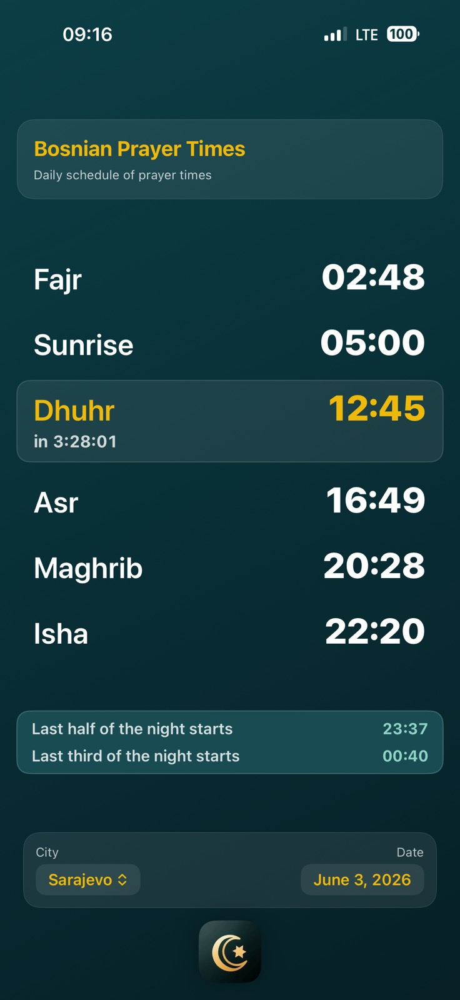
The same optional night markers are available in the English interface.
Widgets
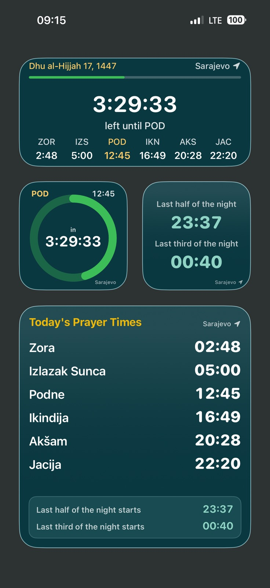
The widgets can show the next prayer countdown, today's prayer times, compact countdowns, and night-time information.

The Lock Screen widgets show the next prayer and countdown in text and circular styles.
Apple Watch
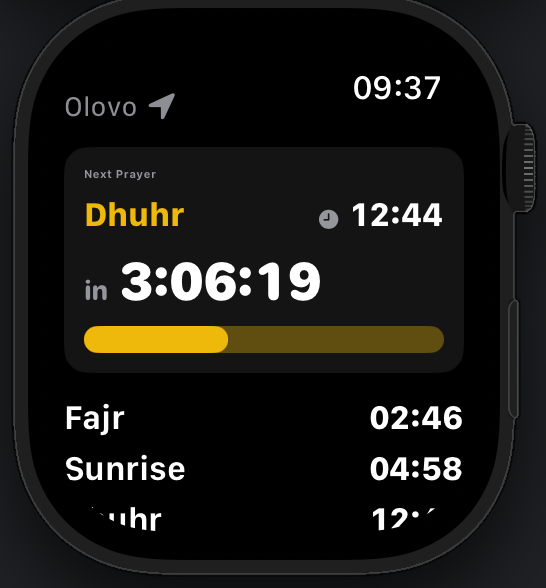
The watch app highlights the next prayer with a countdown, city, and daily prayer times.
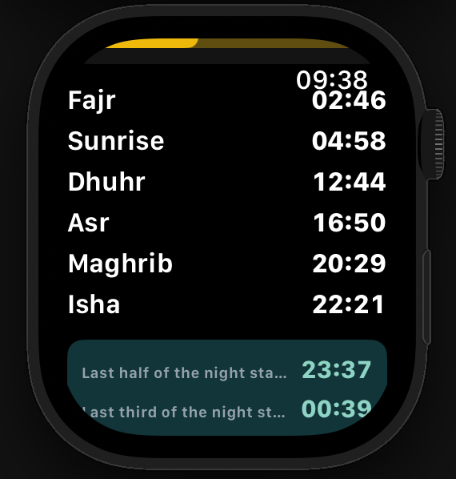
A compact schedule view shows the daily prayer times and optional night-time information on Apple Watch.
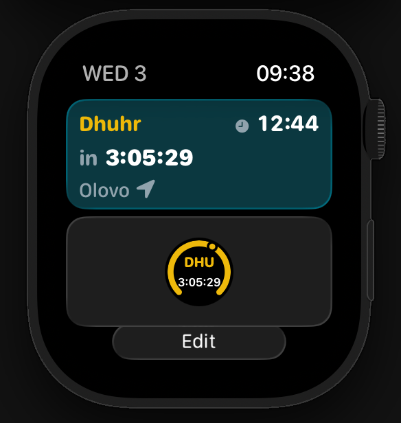
Apple Watch widgets provide quick text and circular countdown views for the next prayer.
Settings
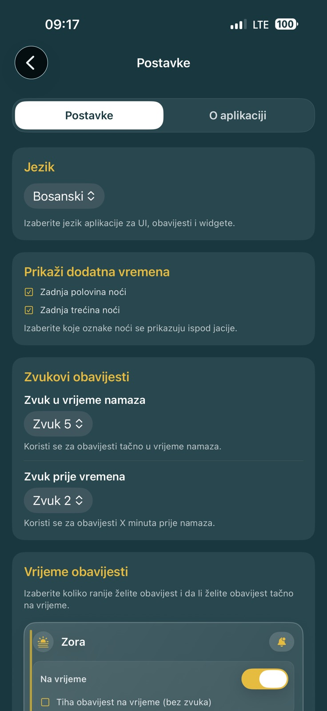
The Bosnian settings screen includes language selection, additional time information, notification sounds, and timing options.
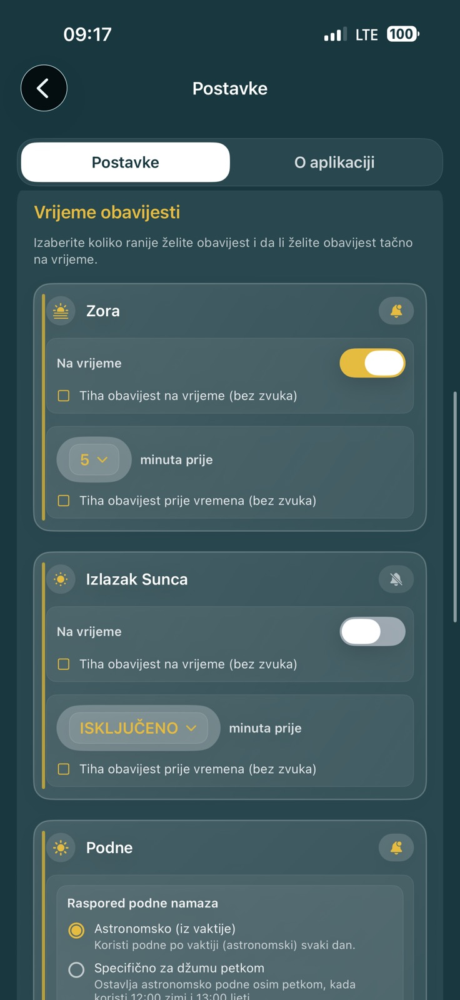
Per-prayer reminder controls let users decide which notifications are scheduled and when they should appear.
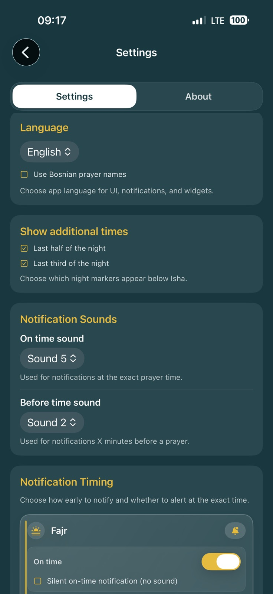
The English settings screen offers the same language, display, sound, and notification timing options.
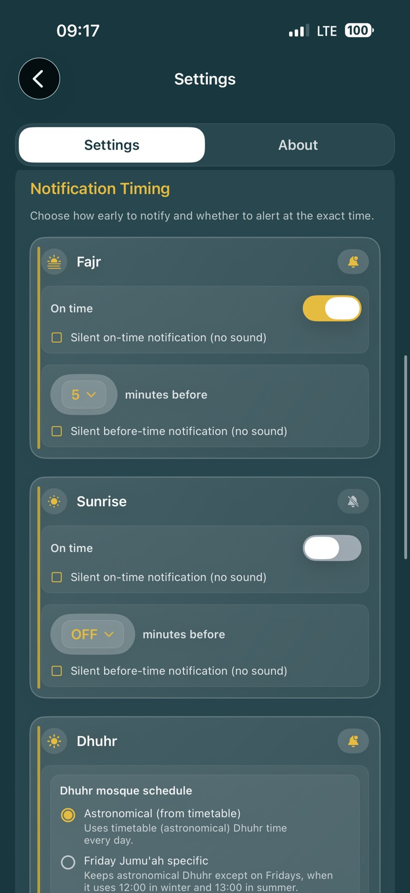
Notification controls include separate settings for each prayer and options for the Dhuhr mosque schedule.
About
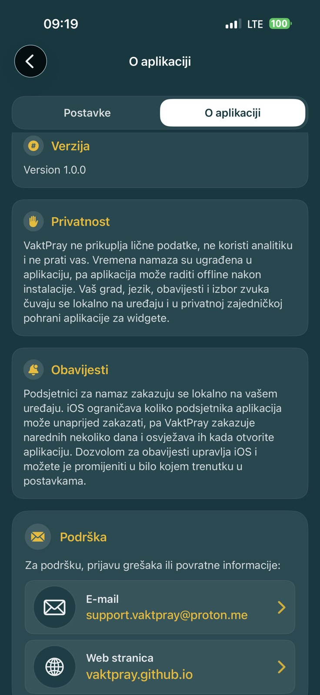
The Bosnian About page summarizes the app version, privacy details, notification behavior, support, and website information.
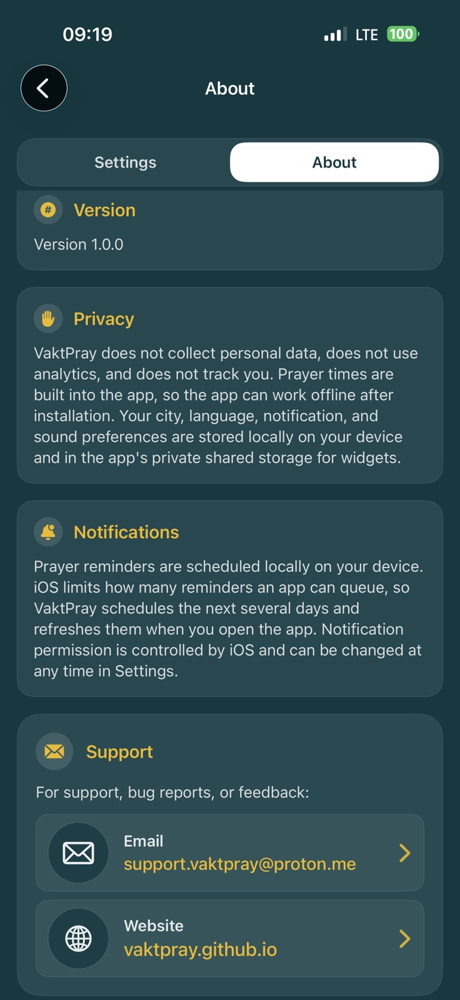
The English About page gives users the same app version, privacy, notification, support, and website details.